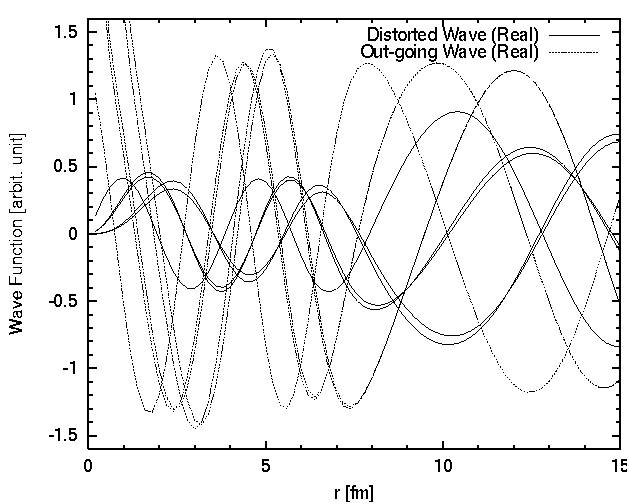
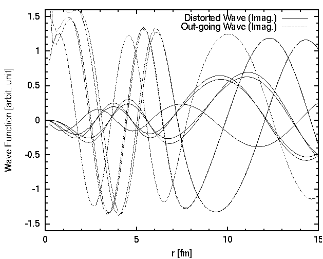

set term postscript eps enhanced
set size 0.7,0.8
set xlabel "r [fm]"
set xrange [ 0 : 15 ]
set xtics 0,5
set mxtics 5
set ylabel "Wave Function [arbit. unit]"
set yrange [-1.6:1.6]
set ytics -2,0.5
set mytics 5
set linestyle 1 lt 1
set linestyle 2 lt 4
set output "wavefunc1.eps"
plot "wavefunc.dat" usi ($1*0.2):2 ti "Distorted Wave (Real)" with lines linestyle 1, \
"wavefunc.dat" usi ($1*0.2):4 ti "Out-going Wave (Real)" with lines linestyle 2
pause -1
set output "wavefunc2.eps"
plot "wavefunc.dat" usi ($1*0.2):3 ti "Distorted Wave (Imag.)" with lines linestyle 1, \
"wavefunc.dat" usi ($1*0.2):5 ti "Out-going Wave (Imag.)" with lines linestyle 2
pause -1

